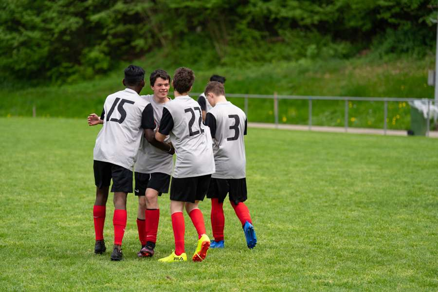
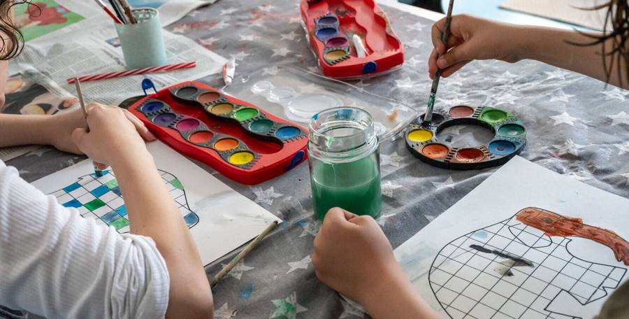

AngebotAufnahmeAlltagÜber unsJobs

13. August 2026 · Aus unserem Alltag
European Inclusion Cup: Ein Wochenende voller Fussball, Begegnungen und gelebter Inklusion
Das von FOOTBALL IS MORE initiierte Turnier verbindet sportlichen Wettkampf mit gesellschaftlicher Teilhabe. Nachwuchstalente und Menschen mit Beeinträchtigungen zeigen gemeinsam ihr Können auf dem Platz – ein starkes Zeichen für Gleichberechtigung und Inklusion.
Vom 7. bis 9. August 2026 nahm der FC Bruschgol – mit drei Spielern des SONNENBERG und fünf weiteren Spieler*innen aus dem Talkessel Schwyz – am European Inclusion Cup in St. Gallen teil. Das Teilnehmerfeld war beeindruckend international: Teams aus Portugal, der Ukraine bis hin nach Dubai.
Auf dem Rasen warteten unter anderem Chelsea FC, Benfica Lissabon und Werder Bremen; auch der FC Winterthur, Lausanne-Sport, YB und der FC Zürich forderten unser Team heraus. Unsere Spieler*innen zeigten viel Einsatz, Motivation und Freude am Spiel.
«Fussball, Begegnung und gelebte Inklusion – dafür steht der FC Bruschgol seit Jahren.»
Nächste Geschichte

Solche Momente entstehen jeden Tag – in Schule, Internat, Therapie und Freizeit.
Alle Geschichten aus dem Alltag
Landhausstrasse 20 · 6340 Baar · 041 767 78 33
JobsImpressumDatenschutz